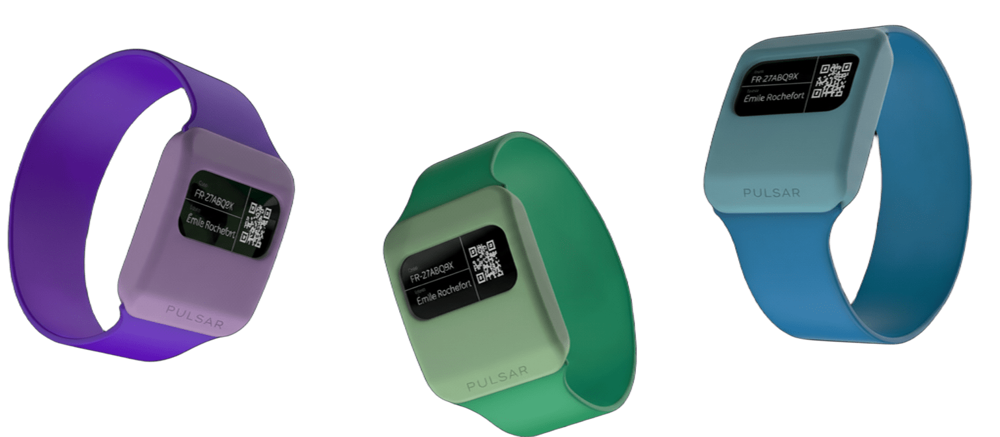
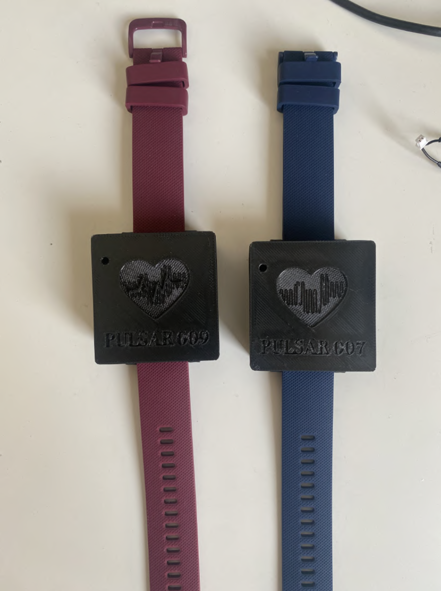
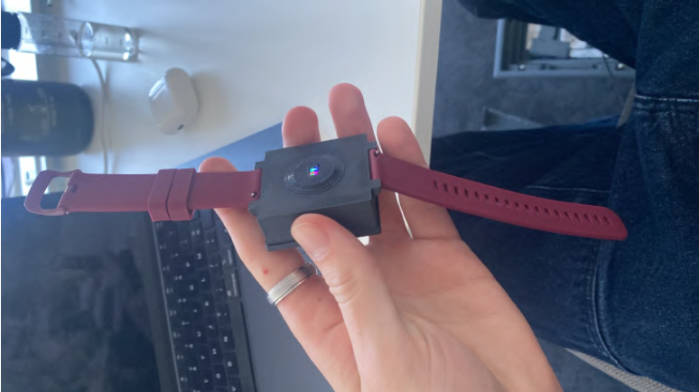
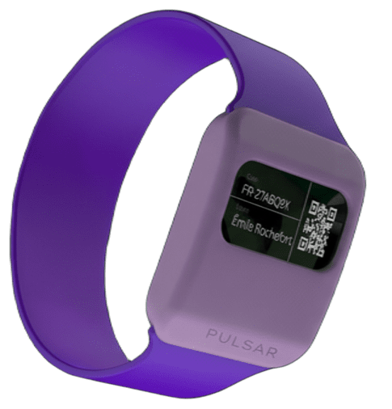
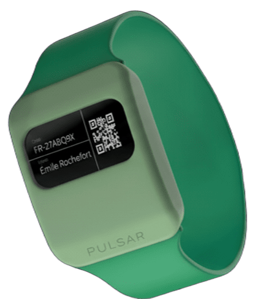
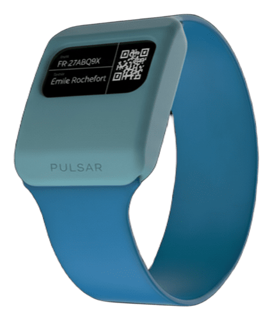

Cardiac wearable for clinical trials. From firmware to validated clinical data — 50+ patients, 99.2% uptime, zero data loss.

80% of arrhythmias occur in daily life. Standard Holter monitors restrict movement, require clinical setup, and return data days later. ICU teams needed a wearable that captures, processes and transmits in real time — without requiring a nurse to operate it.
PULSAR is a physiological monitoring wristband designed for ambulatory clinical trials. Built at AGORANOV Paris, validated at Clinique Hartmann, Neuilly-sur-Seine under the supervision of Dr. Lee (ICU).
Real-time dual-core processing on ESP32-S3 at 240MHz with 8MB PSRAM. Multi-spectral optical sensor capturing PPG at 4 channels × 100Hz. Zero-loss data pipeline solving critical FIFO overflow — every sample recorded, no exceptions.


FreeRTOS task architecture with dedicated acquisition, processing and transmission tasks running on separate cores. Two operating modes: Wi-Fi + AWS IoT cloud pipeline for live trial monitoring, or standalone SD card recording for offline environments.
Continuous deployment at Clinique Hartmann (Neuilly-sur-Seine) under ICU supervision. 50+ patients enrolled across diverse age groups and pathologies. Medical precision validated against professional-grade oximeters. Zero safety incidents.
Built April – October 2024 in the AGORANOV Paris incubator. Three-person core team with international industrialisation partner EMBRILL (India) for the production roadmap.

Violet
Emerald
Cobalt